RePhone can be a learning tool for you to start interesting projects. Currently, RePhone supports various development environment and development languages, you can either built applications with C/C++ based on Eclipse IDE, Arduino IDE, or with Lua and JavaScript.
This wiki is a User Guide to help you start your RePhone project with Arduino IDE.
Before you download the Arduino IDE for RePhone, make sure you have an operation system as following:
Windows XP/Vista/7/8/8.1
We have put the Arduino IDE for RePhone on our GitHub, and you are quite welcomed to send us 'pull request' to help us optimize and improve it.
If you ever used the Arduino IDE before, then this should be just a piece of cake. If you are not familiar with Arduino, which is fine as well, just follow the instructions, and you will be getting started with Arduino IDE easily and quickly.
Now click to
On the Github page, click the Download ZIP to download the file as the image shown below:
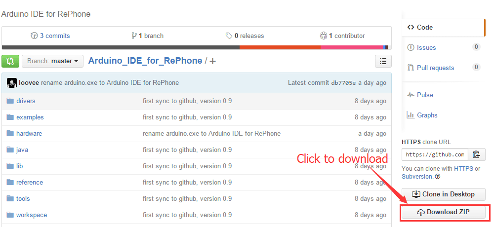
When the download is complete, unzip the file to a proper location.
If you are using the Windows8/8.1, you would need to disable Driver Signature Enforcement first to be able to install the driver.
You should save the files you are editing before trying to turn off the 'Driver Signature Enforcement' as your system will be shut down during the operation.
Now follow the instructions below to disable the 'Driver Signature Enforcement.'
1. Firstly, power up your RePhone by plug in the battery or power it with external power sources(3.3 ~ 4.2V(no SIM)/3.5 ~ 4.2V(with SIM))to the battery socket on the Xadow GSM+BLE, press and hold the power key (PWR) for 2 second to turn it ON (LED indicator shows GREEN), then connect your RePhone to PC with a Micro USB cable.

2. Open Device Manager by clicking the Start button, clicking Control Panel, clicking System and Security, and then, under System, clicking Device Manager. If you're prompted for an administrator password or confirmation, type the password or provide confirmation.
In the Device Manager, you'll be seeing unknown devices as shown below:
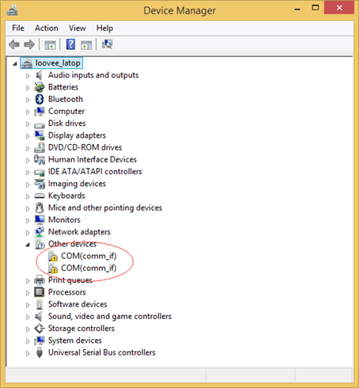
3. Right click on one of the unknown devices, choose Update Driver Software.
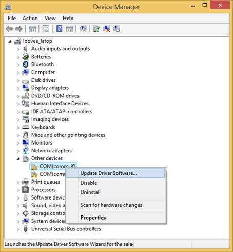
4. Choose Browse my computer for driver software.
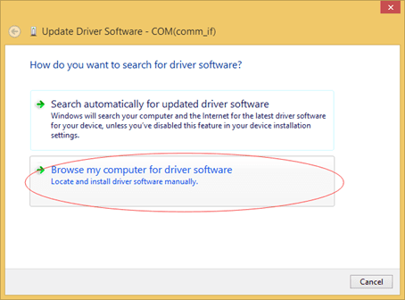
5. Click Browse and the locate the folder which you've unzipped the Arduino IDE for RePhone .. \Arduino_IDE_for_RePhone\drivers\mtk . Click Next to start the driver installation.
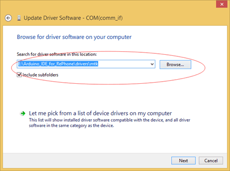
6. When the driver software is successfully installed, you will be able to see the following complete page, click Close and start over from step 1 to 6 to install the driver for another unknown device.
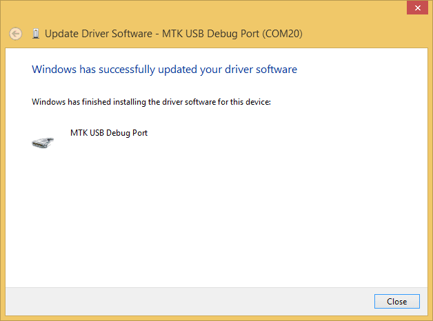
You can also install the driver manually:
1. In "Browse for driver software on your computer" window, click "Let me pick from a list of device drivers on my computer"
2. Then click "Ports(COM&LPT)" and go "next"
3. Click "Have Disk"
4. Afterwards,
-- if you are using Windows Vista 64bit, locate "Arduino_IDE_for_RePhone-master\drivers\mtk\Vista\usb2ser_Vista64.inf\"
-- if you are using Windows 7 or higher with 64bit, locate "Arduino_IDE_for_RePhone-master\drivers\mtk\Win7\usb2ser_Win764.inf"
LinkIt Assist 2502 SDK 2.0.46 also provide an driver installation program for you to install the drivers.
Then find the driver installer in the path "MediaTek_LinkIt_Assist_2502_SDK_2_0_46\LINKIT_ASSIST_SDK\Driver\InstallMTKUSBCOMPortDriver.exe"
NB: Please be noticed that flash the firmware will delete all the settings and files(images, musics) stored in the RePhone, please make sure you have been aware of this before you flash/update the firmware.
To make use of the Arduino IDE for RePhone, you would have to update/flash the firmware as well. The process is as simple as following:
1. Disconnect your RePhone with PC, press and hold the power key(PWR) for 2 seconds to turn it OFF (LED indicator turn RED and then goes out)
2. Open the FirmwareUpdater.exe under the path ...Arduino_IDE_for_RePhone\hardware\tools\mtk\FirmwareUpdater.exe, be sure your platform on the Firmware Updater is "RePhone" as showing below, if not, click "Others" and locate to ...Arduino_IDE_for_RePhone\hardware\tools\mtk\firmware\LinkIt_Device\RePhone\W15.19.p2-uart\SEEED02A_DEMO_BB.cfg, then click Download (The Green Button).
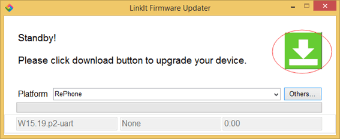
3. Now you will be asked to connect your RePhone to PC via USB cable, make sure your RePhone has been turned OFF and meantime a functional battery should be always connected ( Powered Up).
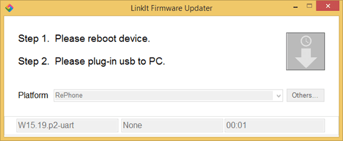
4. Wait until the downloading finish. This might take about 1min, also it may stuck at 50% for quite a while, please be patient.
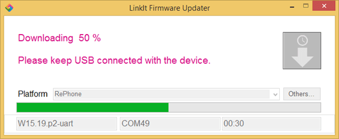
5. In the Complete page click OK to finish the firmware update.
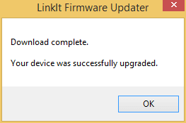
Please be noticed that reset your Rephone to defaults will delete all the settings and files(images, musics) in the RePhone, do aware of this before you reset it to defaults.
To reset your RePhone to DEFAULTS:
1. Follow the instructions in "Update/Flash the Firmware" section to flash the firmware
2. Download the RePhone_Create_Kit_VXP file
3. Enter the RePhone Mass Storage Mode
4. Copy everything under the file named "RePhone Create Kit VXP" into the RePhone 5MB mass storage.
5. Restart your RePhone then its done. As reset have deleted all the files, you would have to put an mp3 file in the mass storage as well for the use of ringtone.
Now you've prepared things required, and we are ready to rock on with RePhone.
Let's start with a simple program Hello World
1. Press and hold the power key (PWR) for 2 seconds to turn it ON (LED indicator shows GREEN)
2. Open the Arduino_IDE_for_RePhone.exe in the folder where you unzipped the Arduino IDE for RePhone, the software interface is as following:
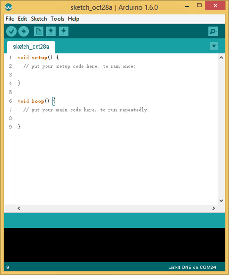
3. Open Device Manager to check for the COM ports. There will be two COM ports:
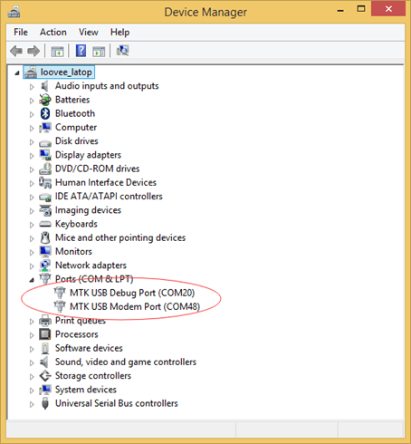
4. On the Arduino IDE window, click Tool => Port, select MTK USB Debug Port, which is COM20 in this case, the COM number might be different in your PC, just make sure it corresponds to the Debug Port.
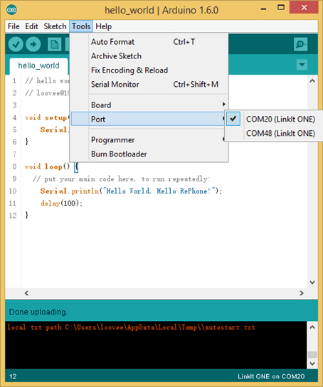
5. On the Arduino IDE window, click Tool => Board, select RePhone
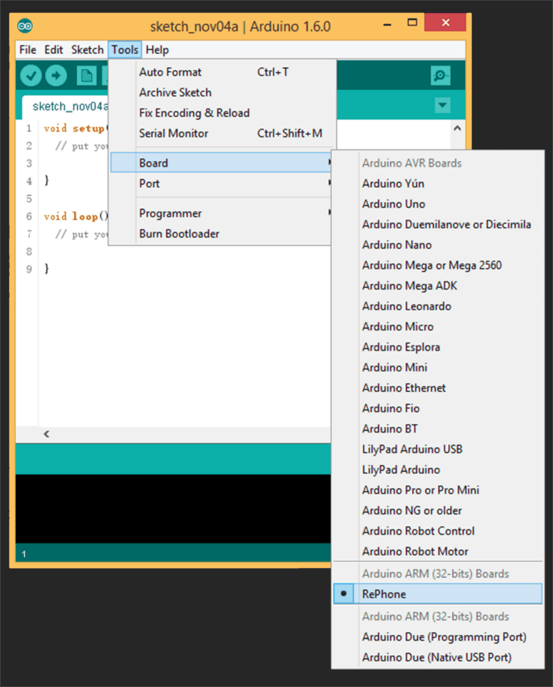
6. Now copy the following code to your Arduino IDE:
// hello world for test RePhone // loovee@10-18-2015 void setup() { Serial.begin(115200); } void loop() { // put your main code here, to run repeatedly: Serial.println("Hello World, Hello RePhone!"); delay(100); }
7. Now press the Upload button to upload the code to your RePhone. You will see the Done uploading when the code is successfully uploaded.
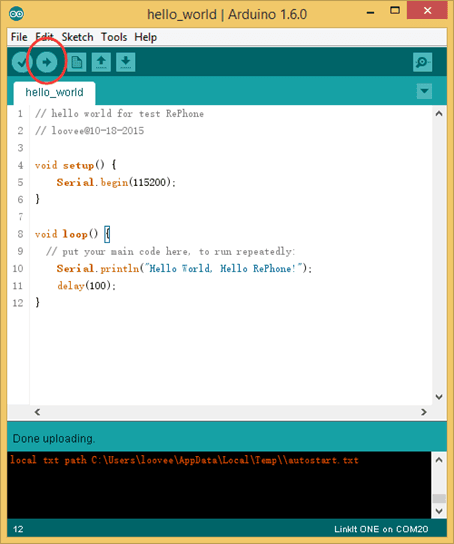
8. As RePhone use different COM ports for uploading software and logs, to read the logs, we need to switch the selected COM Port to MTK USB Modem Port. On the Arduino IDE window, click Tool => Port, select MTK USB Modem Port, which is COM48 in this case.
Then open the Serial Monitor
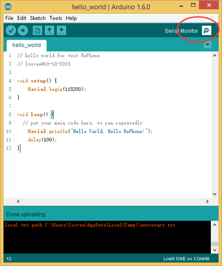
9. Now we can see the Hello World we have printed with Serial.println() .
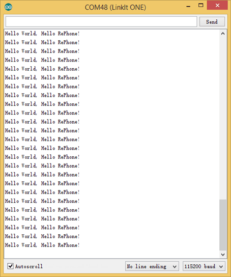
Playing with some example code would a good start if you are heading into some even more interesting project.
1. Simply setup your sketchbook location in the preference as Arduino_IDE_for_RePhone-master\hardware\arduino\mtk (where you install the Arduino IDE for RePhone)

then restart the Arduino_IDE_for_RePhone.exe, you'll be able to see the example codes.
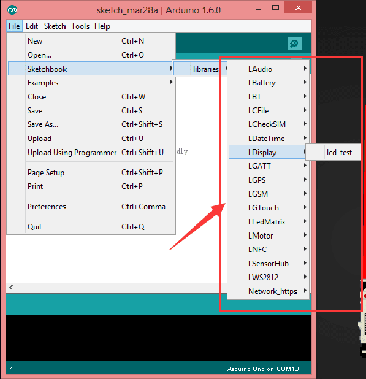
2. You can also find the Arduino example coded manually for all the RePhone modules in the following path:
Arduino_IDE_for_RePhone-master\hardware\arduino\mtk\libraries


We’ve been looking for a better place where our backers (RePhone Users) can sit together, warmly and comfortably, have conversations about RePhone, discuss technical problems, share ideas/projects, and give feedback on the modules’ development in the future. And then here we go, the RePhone Community.
Now join us in the RePhone Community!
Together we seek answers, make interesting stuff, care about each other, and share our experiences.
You've done a great job so far! RePhone comes with a big family of modules with different features and functionalities. Go to check the wiki for modules for more applications!
Copyright (c) 2008-2016 Seeed Development Limited (www.seeedstudio.com / www.seeed.cc)